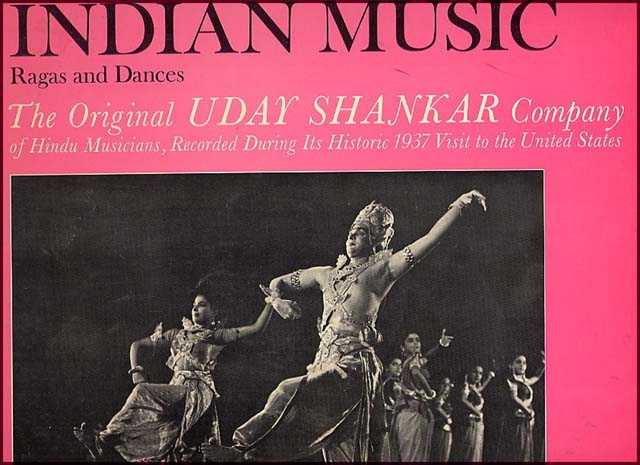
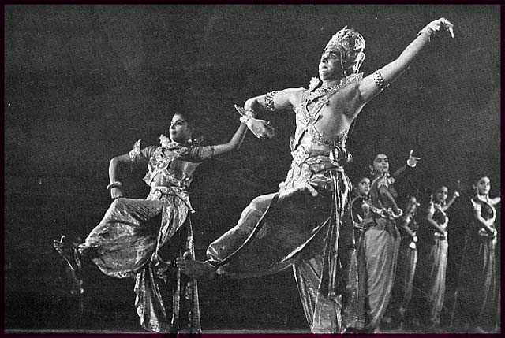

|
|
Uday Shankar Troupe's 1937 Recordings of Indian Ragas
A.H.
Jaffor Ullah
Page
1 2
3 4

Not too long ago an
American colleague and a friend of 20-years let me borrow a 12-inch vinyl
phonograph album (to be run at 33.33 rpm in a turntable), which he said that I
would enjoy enormously. My friend knew well how much I love listening to raga
or classical music of South Asia. I grew up listening to thumri, kheyal, and
other forms of light classical music in the 1950s and 1960s growing up in
Tejgaon, Dhaka. My father used to arrange once in a while all night music
Jalsa in our house where mot only vocalists but sitar, sarod, esraj, etc.,
player would play only ragas to our hearts' content.
After hearing my friend's word on this vinyl
record album, I thought that he was going to lend me a sitar or sarod recital
of either Pundit Ravi Shankar or Ustad Ali Akbar Khan but when he handed me
the album, I could not believe my eyes. He lent me an album that was recorded
in 1937 when Uday Shankar's dance troupe visited America for the first time.
In those days, the dance troupe used to have a dozen or so musicians traveling
with them who would supply the lush live music for dances. Apparently,
someone record company in New York City had taped the music using a modern
recorder. Be mindful that in late 1930s ferric tape-based electronic
recording has just begun as opposed to mechanical recorder that were common in
1920s going into 1930s. Therefore, the fidelity in recording had improved a
great deal. The recorded songs of the album were released a year later in
1938 but I do not know who had published those songs and in what format.
However, lucky for us that RCA decided to re-release these musical gems after
31 long years in 1968. The album cover says: "Ragas and Dances. The original
Uday Shankar Company of Hindu musicians, recorded during its historic 1937
visit to the United States" (RCA Victrola VIC-1361; 1968).
There was a liner's note written on the back cover of the album by Mr. James
Lyons who described Uday Shankar's dances that were deeply rooted in Hindu
mythology. The front cover had a black and white photo of high quality, which
portrayed Uday Shankar as Shiva and most likely Amala Shankar, his wife as
Parvati. In the background was a gaggle of female dancers all posing nicely.
Reading some personal accounts written by others I gathered that Uday Shankar
brought his dance troupe to America in 1936. They performed in big cities
allover America. Someone had mentioned that Uday's troupe had performed in
Boston in 1936. The British upper crust may have heard the temple music
earlier but not the middle class in Europe or North America. Uday Shankar
is the person who single-handedly had exposed our rich tradition of music and
dance to the westerners.
One example of Uday's ambassadorship to the west will be sufficed. I read a
description in a web site where someone wrote how Russian dramatist Anton
Chekhov was exposed for the very first time to Indian music and dance in
England. Here is the excerpt: "Dartington Hall in Southern England is a
fourteenth-century castle converted into a centre for rural enterprise, for
education and for the arts. By the time of Chekhov's arrival in Dartington it
had became a professional centre for the arts, at first in dance — the Kurt
Jooss ballet was invited — but ultimately in drama, music and fine arts, and
it gained an international reputation. The Indian dancer Uday Shankar
performed with his troupe in the open-air theatre (in 1935). Chekhov greatly
admired their art for its combination of pure movement and music."
Uday Shankar started performing dances of Indian origin starting from 1920s
while he was in England studying paintings. There, he met Russian ballerina,
Anna Pavlova, who was world-renowned at the time. Perhaps from her he learned
ballet movement and then he incorporated those movements into traditional
Indian dances that were based on Ramayana and Puranas. The Hindu god Shiva is
known for his praloy nritaya (cosmic dance); therefore, it was easy for
Uday Shankar to choreograph dance drama based on Shiva's life. Earlier, a
French dancer, Ms. Simkie, joined him who used to play the role of Parvati,
Shiva's consort. Later, as his troupe members grew, he cast Indian girls such
as his cousin Kanaklata - a stunningly beautiful Bengali beauty or Amala
Shankar, his student who became his wife for the role of Parvati. Uday
employed his three brothers, Rajendra, Davendra, and Rabindra (who is better
known as Ravi Shankar) in his troupe as they toured European cities.
For musical accompaniment with the dances, Uday had to assemble a bunch of
gifted musicians. He hired a musician by the name Vishnudass Shirali who was
a former student of Pundit Vishnu Digambar Paluskar, a legendary classical
musician, and teacher of Gwaliar Gharana in early twentieth century.
Mr. Shirali was the arranger and music director for Uday's troupe. Under his
baton was Ustad Alauddin Khan of Comilla who was conversant in playing
multiple instruments. Uday's youngest brother, Rabindra Shankar who changed
his name later to Ravi Shankar, also played Esraj along with other musicians
under Mr. Shirali. Therefore, one could imagine that Uday not only hired
stunning beauties as the dancers but also had employed some very gifted
musicians, mostly Bangalees, for his dance troupe.
The first thing I did with the vinyl album after receiving from my American
friend was to play the album and then digitize the music using my personal
computer after which I used a software to remove the noise associated with any
vinyl album's surface noise (clicks and pops) and the low-pitched rumble of
the turntable. Only after this, did the music come to life and could I hear
all the instruments with some clarity and definition. After this, I burned a
CD so that I will have a clean copy of the album. Not to mention that CD is a
more stable medium then the vinyl album, which is subjected to warp and
damage. Luckily, I still have a quality turntable equipped with a new
magnetic cartridge. That helped the project of mine.

Uday Shankar dancing
with a gaggle of very pretty Indian dancers in1937
The first side of the album has five songs; these are listed here with time in
minutes in parenthesis. 1. Raga Tilanga (4:07); 2. Raga Bahar
(4:12); 3. Dance Gandharva, Raga Malkauns (4:14); 4. Dance Ramachandra,
Raga Simendra Maddhyama - Hamswadhwani (3:58); 5. Tabla
Taranga, Raga Adana (4:19). Side of the album has the following
songs: 6. Dance Kartikeyya, Raga Malkauns (3:48); 7. Dance Indra, Raga
Bhairava (3:16); 8. Dance Snanum, Raga Durga and
Khamaj (3:12); 9. Bhajana (3:40); 10. Raga Misra Kafi (3:24).
The first number is an instrumental piece in Raga Tilang or Tilanga,
which is a minor Raga, played in late night. The music sounded like it is
being played in a Mandir. The instruments include violin, flute, sitar, and
of course tabla. The second piece was also an instrumental music. It is a
happy music in Raga Bahar or Basant (Spring) in fast tempo. The
music starts with a jhala by sitar. The gayeties of spring could be
heard in this beautiful piece. The tune reminded me a Bangla song probably a
Tagore song whose lyric is as follows: Aji Basanta Jagroto Darey (The
spring is alive at my door). I am requesting Mukto-mona forum moderator to
include the MP3 version of this song to be included with my piece so that
readers can listen and appreciate this very tune by mere a click of the mouse.
The third piece is music to accompany a dance number by the name Gandharva; it
is in Raga Malkauns or Malkosh (in Bangla) that is a late night
Raga imbuing a heroic sentiment. Malkauns is a serious Raga played in
a slow tempo at least in the beginning. The fourth cut is a vocal chorus sung
in Raga Simhendra Madhyam and Hamswadhwani, a beautiful
melodious Raga, to accompany "Dance Ramachandra." The lyric is probably in
Hindustani language (Hindi), the repetitive line is - "Ei Charano Mooley"
(At the base of the feet). This beautiful song will be also available for
listening in Mukto-mona site. The fifth cut is a gorgeous instrumental piece
all played by tunable drum, which is called "Tabla Taranga" (The Tabla
Waves) and played in Raga Adana, a midnight Raga. The playing has an
oriental feel to it. It almost sounds like Gamelan music of island Bali.
This rare piece is still being played occasionally in radio that specializes
in playing classical and folk music. It is a must hear music, which will be
available to our readers. This concludes side one of the vinyl album.
The side two starts with song number 6, which is an instrumental a music for
Dance Kartikeyya played in heroic Raga Malkauns. It is a somber tune
to express heroism. With an abundance of bells and flute the piece almost
sounds like a Chinese tune. The seventh cut is an instrumental one to
accompany the Dance for Indra, which was played in Bhairava Raga
(morning Raga). This beautiful piece is also being included in the list of
four songs from the album that could be auditioned by the click of a mouse.
The eighth cut is an instrumental number in Raga Durga and Khamaj
(evening Raga) to accompany a dance call Snanum (The Bathing). The
music here is being played in fast tempo with a lot of chimes, bells. It has
a flavor of oriental (Chinese) music. The ninth number is a vocal song sung
in a Bhajan style whose lyric is "Harinam Ley" (Utter God's name). The
10th and the final cut is an instrumental song in Raga Misra Kafi
(Mixed Kafi Raga), which is played in early night. The lead instrument was
sorod (Indian lute) that is accompanied with a host of other instruments such
as violin, flute, tabla, etc.
All in all, the 1937 recordings of Uday Shankar’s troupe is a historical
recording of South Asian music. To my knowledge, one will be hard pressed to
find a recording of the performing music of that time period. The musicians
under the baton of Sri Vishnudass Shirali were: Sisir Sovan, Rabindra (Ravi)
Shankar, Dulal Sen, Nagen Dey, and Brijo Behari.
Please listen to the four cuts from the vinyl album that are available
in this site as MP3 and enjoy the very best of music South Asia could have
offered about 70 years ago. Mukto-mona will be the only site in the entire
world that could offer such a real treat. The phrase "Life is short, art is
long" takes an entirely a new meaning through the courtesy of Mukto-mona.
Link for four musical selections from Uday Shankar's album "Indian
Music; Ragas and Dances" recorded in 1937:
|Cut-1
| Cut-2 |
Cut-3|
Cut-4|
----------------------------
This
article was written by Dr. A.H. Jaffor Ullah specially for Mukto-mona. No part of
this article can be reprinted in any format without written permission of
Mukt-mona.
|
|
|